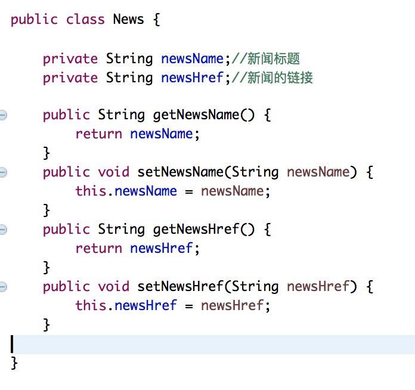
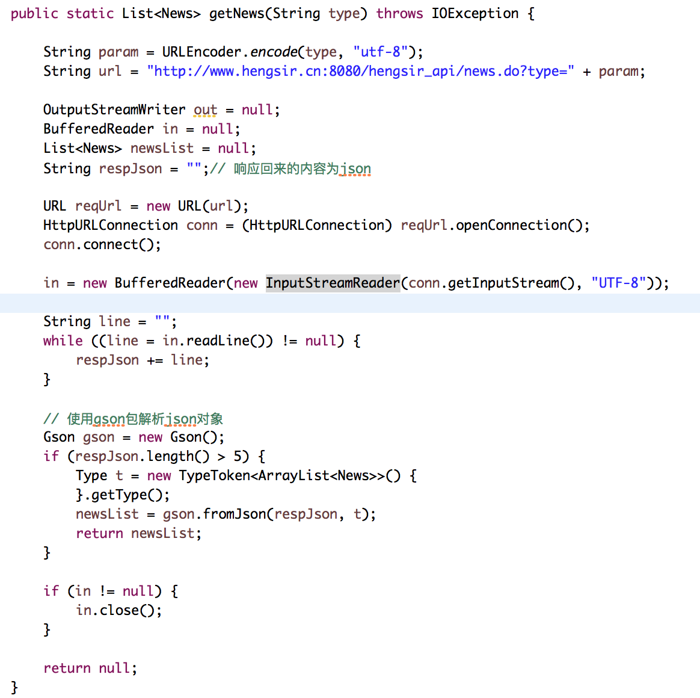

这是一个获取6种类型新闻资讯的接口,有:体育,教育,娱乐,军事,旅游,科技这6大板块。你不会爬虫没关系,只需要用以下这个接口即可。
接口地址:http://www.hengsir.cn:8080/hengsir_api/news.do?type=
demo下载: demo_hengsir_api_news.zip
使用方法:(java普通类)
1、要知道调用接口后响应回来的是一个List的json对象,所以需要建一个pojo类,里面有两个成员,分别是"newsName","newsHref" 切记一定要跟我的相同
2、编写方法使用URL访问,用输入流写进来 注:需要导入 gson-2.8.0.jar这个包(点击下载)
